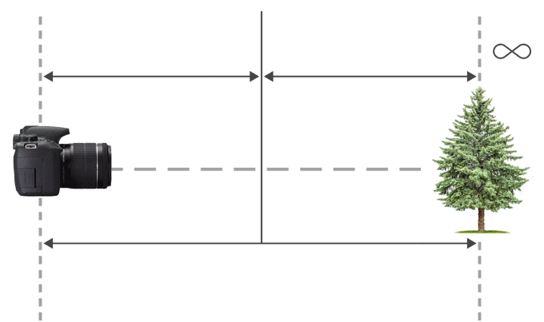

Esta herramienta te permitirá calcular la distancia hyperfocal de tu lente.
Solo debes escoger la información que corresponda.
Cámara que utilizas Elige una opción... Canon T5i (APS-C)
Distancia focal de tu lente: Elige una opción 17 35 50 mm
Apertura de tu lente: f/ Elige una opción 2.8 4 5.6
Distancia Hiperfocal:
Límite Hiperfocal más cercano:
